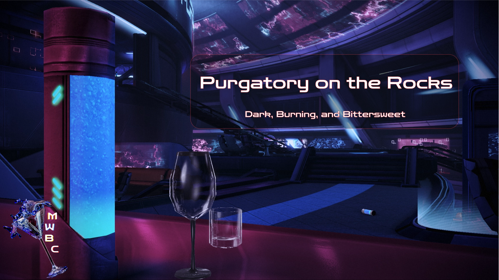

The Final Round
The final stretch is upon us! Mass Effect 3, where everything comes together. Time to patch the cracks, polish the glassware, and make sure the night ends on a satisfying note.
One more for the road; Let’s finish strong.
Batch
A curated night around the galaxy awaits!
We end the night back at the Citadel, where the club Purgatory holds a secret for all who enjoy a good ending:
Purgatory on the Rocks: Dark, burning, and bittersweet - one last drink at the edge of all things. 
Download it directly here (by clicking on the image):
or from the Nexus page:
Click Me!
Installation
Who say the journey can't be just as enjoyable as the destination? Here’s the secret to a good bar crawl:
- Open M3.
- Select Mod Management → Batch Mod Installer.
-
Load the batch file:
- If you downloaded the list through M3, it will appear automatically.
- If you downloaded it manually, place the file into:
(Your M3 folder)/mods/BatchModQueues
Then reopen the Batch Mod Installer.
-
Download every mod through the Batch Mod Installer whenever possible. This ensures you get the correct versions of everything.
In cases where it is not possible to go through the Installer, simply download and import manually.
Depending on your Nexus membership and file sizes, this may take a little while. Please be patient with your aging barman (28). - Once everything has finished downloading, click Install this group.
- When asked if you want to use previously saved options, click Yes.
- Wait until everything is installed, then launch the game once to make sure everything is working.
- Congratulations! You've survived the easy part. Before you start playing, head on over to Finish.
After installation is complete the Expanded Galaxy Mod Settings utility will open itself.
Navigate to the Mission Timings tab and for the Citadel DLC switch to Disable DLC (or CEM Full).
You need to do this since the list includes Citadel Epilogue Mod (CEM), which turns that DLC into an Epilogue for the game.
If you do not change this you'll be able to start the DLC like normal, which defeats the purpose of CEM a bit.
Manual
A colorful selection awaits the adventurous soul.
We end the night back at the Citadel in club Purgatory, where the dark beats and colorful drinks promise a satisfying end to the night.
Patches / Compatibility
If you were to install the mods listed below from top to bottom, all relevant patches should appear when needed.
Remember that you are shaping your own flavor of drink here however, so be sure to always read thoroughly through each mod's Nexus page.
Bugfix mods are always a bit unglamorous by nature, but the work the community has put into these ever since the ME3Recalibrated days is beyond astonishing.
Funnily enough there is a fish feeder in the game you can buy, but it's stupid expensive and doesn't unlock for a while if memory serves.
It'll forever remain a mystery why no one at Bioware thought to do this.
One of my all time favorite mods for LE3 I think.
I cannot possibly convey in a few sentences how much this mod adds to the experience, so definitely check out the Nexus page.
Seriously, it is impressive what they manage to do here.
This is, I think, my favorite mod for the game. It would be genuinely impossible to summarize just how much this mod does, so definitely check out the Nexus page.
Learn more about how the war is affecting every corner of the Galaxy and make some hard choices which influence your War Assets.
The result is more visual variety and a few new combat situations which really lean into the horror of the Reapers.
The result is more visual variety and a few new combat situations which really lean into the sheer breadth of the Geth army.
The result is more visual variety and a ton of new combat encounters against named enemy commanders and new enemy types, making Cerberus a lot more fun to fight.
Sounds flippant, I know, but it genuinely works. Strip away his nonsensical dialogue, hide his face, and he suddenly feels a whole lot more like the dangerous Cerberus operative the game keeps insisting he is.
Optionally, the mod also switches out Kai Leng with a Phantom during the Citadel Coup, which makes for a nice introduction to a new enemy type.
The result is more visual variety and new combat encounters against named enemy commanders and new enemy types, making them more fun to fight.
Takes a little getting used to, but it fits his character pretty well.
A monumental effort involving scene-by-scene restortation, artifact cleanup, modern Bink 2 encoding, and even recreating some cinematics in-engine.
Lights Out
Congratulations on finishing the last stop on our journey across the galaxy.
Your drink empty and your game ready, whether you continue with me to After Hours in search of exotic flavors, or if you call it quits here, I hope you have enjoyed your time thus far.
If you decide to end the night here be sure to visit the "Finish" page before departing.